Comércio eletrónico
Vendas através de loja própria, marketplace ou outras plataformas de comércio à distância.
03 · Para quem · Perfil 03
Num negócio online, a venda, a fatura e o valor recebido nem sempre coincidem. As plataformas podem descontar comissões, agrupar transferências, processar reembolsos ou operar em diferentes moedas. A documentação é frequentemente digital e pode estar distribuída por várias ferramentas.

Vendas através de loja própria, marketplace ou outras plataformas de comércio à distância.
Atividades digitais com clientes nacionais ou estrangeiros e documentação predominantemente eletrónica.
Stripe, PayPal e outros processadores podem agrupar movimentos, deduzir comissões e gerar diferenças entre vendas e recebimentos.
As operações nacionais, intracomunitárias ou internacionais devem ser analisadas de acordo com o enquadramento concreto.
Plataformas, pagamentos digitais, documentação remota e diferentes mercados.
Ver ficha02Contabilidade CertificadaOrganização, registo e acompanhamento regular da informação contabilística.
Ver ficha03Acompanhamento fiscal e obrigaçõesDeclarações, prazos e obrigações periódicas acompanhadas ao longo do ano.
Ver ficha04Consultoria de gestãoInterpretação de resultados, custos, tesouraria e informação para decisão.
Ver fichaSim. O acompanhamento pode abranger plataformas digitais, diferentes meios de pagamento, vendas online, prestação remota de serviços e documentação proveniente de várias fontes. Cada situação é analisada de acordo com as operações realizadas e os mercados envolvidos.
Descreva as plataformas e os meios de pagamento que utiliza. Organizamos o circuito a partir daí.
Fale connosco